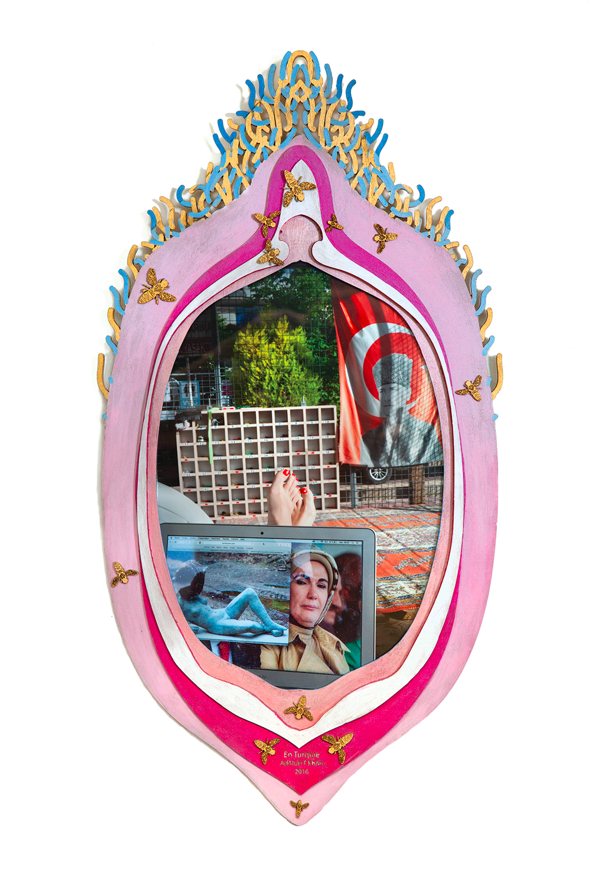

Frédéric Fontan : 15 pays, 4 ans de travail, 42 photos ... Quel était ton modus operandi ? En arrivant dans un pays, comment tu faisais ? Tu avais une idée précise de ce que tu voulais faire ? Tu te disais : dans cette ville-là, je voudrais faire cette association-là ?
Beaubourg Delhi
Voyage missionnaire au nom de l’art contemporain français
La série “Beaubourg - Delhi / Voyage missionnaire au nom de l’art contemporain français”, est née
durant un périple en voiture de Paris jusqu’en Inde effectué en 2016.
Des photographies souvent ironiques inspirées des iconographies missionnaires depuis les Jésuites
jusqu’aux ONG y sont présentées dans des cadres complexes.
La série a été pour la première fois exposée dans son ensemble à la galerie Alfalibra, Paris, en
2020.
Vue de l’exposition Beaubourg - Delhi à la Galerie Alfalibra, 2020
Adalbert Khan : Dans chaque photo il y a une référence à un artiste ou une institution d’art contemporain français, que j’ai détournées pour parler d’un sujet lié au pays traversé. Le rapport à chaque pays était différent. En arrivant dans un pays j’essayais de l’appréhender, je lisais des livres d’histoire, parlais avec les gens. S’en dégageaient des sujets que j’avais envie de mettre en scène. Je me faisais une idée de la forme que l’image prendrait, puis j’en fabriquais les accessoires, souvent en utilisant des éléments locaux. Ensuite je cherchais les gens et le lieu pour finir par réaliser la photo elle-même.
Entretien avec Frédéric Fontan, Directeur de la Galerie Alfalibra, 2020
L’Art Contemporain franchissant les Alpes, France 2016 - 2020
Photographie, verre, bois, peinture métallisée, 94 x 130 cm
Les conversions, Italie 2016 - 2020
Photographie, verre, bois, peinture métallisée, 53 x 40 cm
Le Livre, Bosnie 2016 - 2020
Photographie, verre, bois, peinture métallisée, 70 x 87 x 10 cm
Au péril de sa vie, Turquie 2016 - 2020
Photographie, verre, bois, peinture métallisée, 80 x 120 cm

The french guy left no stone unturned, Turquie 2016 - 2020
Photographie, verre, bois, peinture métallisée, 48 x 80 cm

En Turquie, Turquie 2016 - 2020
Photographie, verre, bois, peinture métallisée, 80 x 43 cm
Campagne de sensibilisation, Turquie 2016 - 2020
Photographie, verre, bois, peinture métallisée, 46 x 46 cm

La nature chantant les louanges, Turquie 2016 - 2020
Photographie, verre, bois, peinture métallisée, 84 x 100 cm
Ni Pardon Ni oubli, Turquie 2016 - 2020
Photographie, verre, bois, peinture métallisée, 70 x 115 cm
Je m’amuse parfois, Turquie 2016 - 2020
Photographie, verre, bois, peinture métallisée, 108 x 108 cm

Au nom de l’amitié entre les peuples, Iran 2016-2020
Photographie, verre, bois, peinture métallisée, 90 x 60 cm
Devenez vous-même, Iran 2016 - 2020
Photographie, verre, bois, peinture métallisée, 90 x 158 cm
Divine !, Iran 2016 - 2020
Photographie, verre, bois, peinture métallisée, 45 x 60 cm
Unique, Iran 2016 - 2020
Photographie, verre, bois, peinture métallisée, 45 x 81 cm
Readymade, Iran 2016 - 2020
Photographie, verre, bois, peinture métallisée, 45 x 60 cm
La Bonne nouvelle, Iran 2016 - 2020
Photographie, verre, bois, peinture métallisée, 100 x 100 cm
Le Nerf de la guerre, Azerbaïdjan 2016 - 2020
Photographie, verre, bois, peinture métallisée, 38 x 52 cm
Les lendemains, Kazakhstan 2016 - 2020
Photographie, verre, bois, peinture métallisée, 65 x 46 cm
Le Grand Ouzbek, Ouzbékistan 2016 - 2020
Photographie, verre, bois, peinture métallisée, 83 x 60 cm
Nous sommes tous innocents, Kirghizistan 2016 - 2020
Photographie, verre, bois, peinture métallisée, 110 x 104 cm
Le jour viendra du Louvre Issyk Kul, Kirghizistan 2016 - 2020
Photographie, verre, bois, peinture métallisée, 85 x 85 cm
The French Guy left no stone unturned 2, Kirghizistan 2016 - 2020
Photographie, verre, bois, peinture métallisée, 43 x 59 cm
Si tu savais d’où je viens..., Kirghizistan 2016 - 2020
Photographie, verre, bois, peinture métallisée, 67 x 80 cm
Si tu savais d’où je viens 2, Kirghizistan 2016 - 2020
Photographie, verre, bois, peinture métallisée, 44 x 39 cm
Salut, Inde 2016 - 2020
Photographie, verre, bois, peinture métallisée, 83 x 85 cm
Par amour (d’amour), Inde 2016 - 2020
Photographie, verre, bois, peinture métallisée, 127 x 140 cm
Shanti, Inde 2016 - 2020
Photographie, verre, bois, peinture métallisée, 90 x 130 cm
Si Bons, Inde 2016 - 2020
Photographie, verre, bois, peinture métallisée, 43 x 52 cm
Montrez la Voie, Inde 2016 - 2020
Photographie, verre, bois, peinture métallisée, 100 x 120 cm
Tous y aspirent, Inde 2016 - 2020
Photographie, verre, bois, peinture métallisée, 83 x 70 cm
Louvre Dharamsala, Inde 2016 - 2020
Photographie, verre, bois, peinture métallisée, 83 x 60 cm
Campagne de sensibilisation, Inde 2016 - 2020
Photographie, verre, bois, peinture métallisée, 74 x 120 cm
D’autres m’ont précédé, Inde 2016 - 2020
Photographie, verre, bois, peinture métallisée, 74 x 120 cm
Kiimat, Inde 2016 - 2020
Photographie, verre, bois, peinture métallisée, 95 x 130 cm